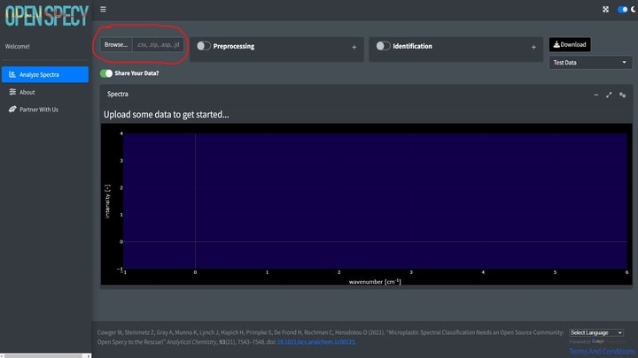
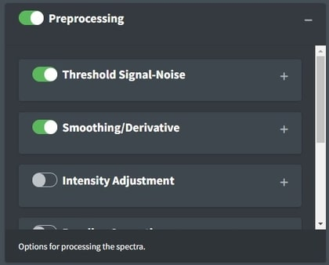
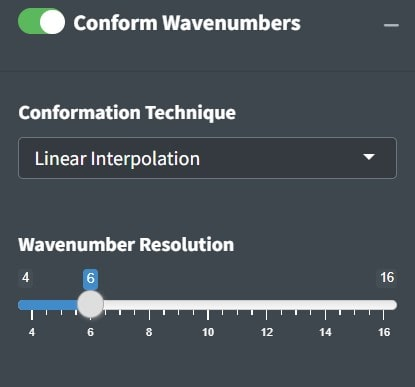
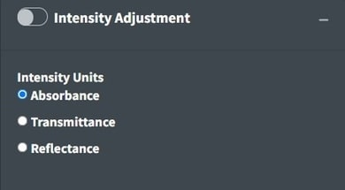
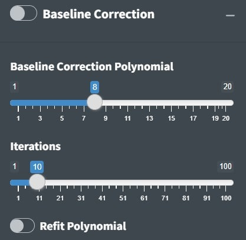
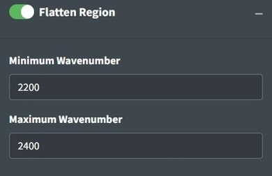
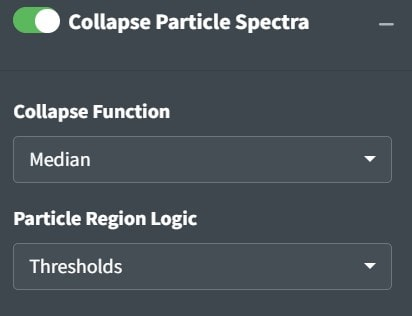
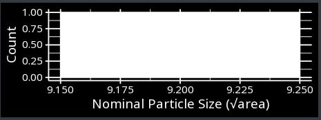
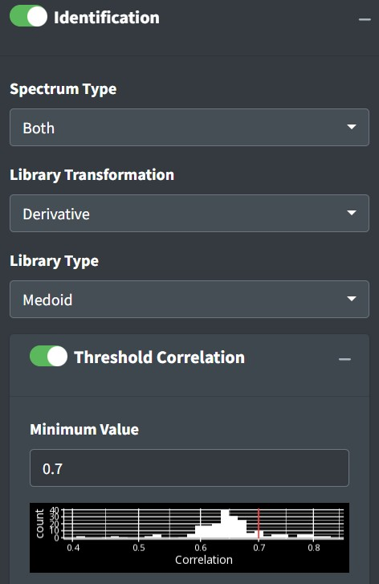
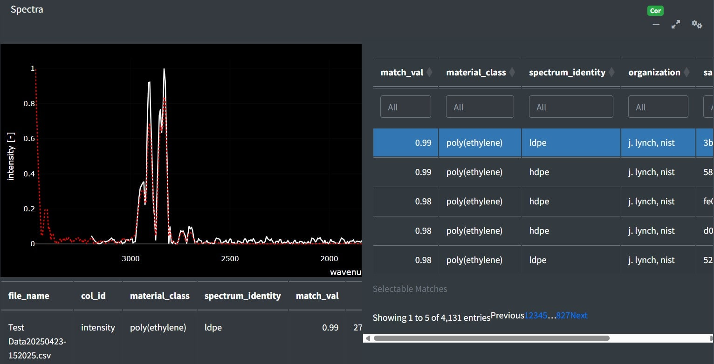

Open Specy App Tutorial
Win Cowger, Zacharias Steinmetz
2025-04-26
Source:vignettes/app.Rmd
app.RmdDocument Overview
This document outlines a common workflow for using the Open Specy app and highlights some topics that users are often requesting a tutorial on. If the document is followed sequentially from beginning to end, the user will have a better understanding of every procedure involved in using the Open Specy R app as a tool for interpreting spectra. It takes approximately 45 minutes to read through and follow along with this standard operating procedure the first time. Afterward, knowledgeable users should be able to thoroughly analyze spectra at an average speed of 1 min-1 or faster with the new batch and automated procedures. If you are looking for documentation about the R package please see the package vignette
Running the App
To get started with the Open Specy user interface, access https://openanalysis.org/openspecy/
or start the Shiny GUI directly from your own computer in R. If using
the package, you just need to read in the library and run the command
run_app().
install.packages("OpenSpecy")
run_app()Reading Data
Once the app is open, if you have your own data, click Browse at the top left hand corner of the Analyze Spectra tab.

Open Specy allows for upload of native Open Specy .y(a)ml, .json, or
.rds files. In addition, .csv, .asp, .jdx, .0, .spa, .spc, and .zip
files can be imported. To upload many files at once either select all
the files you want to upload or zip the files together and upload the
.zip file. Open Specy formats and .csv files should always load
correctly but the other file types are still in development, though most
of the time these files work perfectly. If uploading a .csv file, the
simplest format is to label the column with the wavenumbers
wavenumber and name the column with the intensities
intensity. Wavenumber units must be cm-1. All
other columns will be interpreted as additional spectra. Alternatively,
spectra can be uploaded in wide csv format where some column names are
in numerical format for the wavenumbers, rows will be interpreted as
spectra, and any nonnumeric columns will be interpreted as
metadata.
Always keep a copy of the original files.
| wavenumber | intensity |
|---|---|
| 301.040 | 26 |
| 304.632 | 50 |
| 308.221 | 48 |
| 311.810 | 45 |
| 315.398 | 46 |
| 318.983 | 42 |
It is best practice to cross check files in the proprietary software they came from and Open Specy before use in Open Specy. Due to the complexity of some proprietary file types, we haven’t been able to make them fully compatible yet. If your file is not working, please contact the administrator and share the file so that we can work on integrating it.
The specific steps to converting your instrument’s native files to .csv can be found in its software manual or you can check out Spectragryph, which supports many spectral file conversions see Spectragryph Tutorial.
If you don’t have your own data, you can use a test dataset.

A .csv file of an HDPE Raman spectrum will download on your computer. This file can also be used as a template for formatting .csv data into an Open Specy accepted format.
Visualization
Spectra
In the app after spectral data are uploaded, it will appear in the main window. This plot is selectable, zoomable, and provides information on hover. You can also save a .png file of the plot view using the camera icon at the top right when you hover over the plot. Any metadata pulled from the file is viewable below the plot.

Batches and Maps
Spectral maps (hyperspectral images) and many spectra at once can
also be visualized as spatial information can be plotted as a heatmap.
You can test this functionality using the Test Map from the drop down
where Test Data is. Batch spectra are artificially projected into a
spatial image based on their index. It is important to note that when
multiple spectra are uploaded in batch they are prescribed
x and y coordinates, this can be helpful for
visualizing summary statistics and navigating vast amounts of data but
shouldn’t be confused with map data (for example .hdr and .dat files)
which actually has spatial coordinates. Hovering over the map will
reveal information about the signal and noise and correlation values.
Clicking the map will provide the selected spectrum underneath the
orange dot. In the app, the colors of the heatmap are colored based on
the selection below map color. Signal/Noise will show the selection in
Threshold Signal-Noise and other options become available depending on
the analysis parameters selected. Pixels will appear black if the
spectra does not pass the signal-noise threshold and/or the correlation
threshold.

Processing
The goal of this processing is to increase the signal to noise ratio (S/N) without distorting the shape or relative size of the peaks. We leave this option on by default to avoid accidentally analyzing raw spectra which results in poor identification. Once the process button is selected the default processing will initiate. The default processing is an absolute derivative transformation, does something similar to smoothing, baseline subtraction, and intensity correction quickly.

To view the raw data again, just deselect processing. Toggling processing on and off can help you to make sure that the spectra are processed correctly.
Threshold Signal-Noise
Considering whether you have enough signal to analyze spectra is important. Classical spectroscopy would recommend your highest peak to be at least 10 times the baseline of your processed spectra before you begin analysis. If your spectra is below that threshold, you may want to consider recollecting it. In practice, we are rarely able to collect spectra of that good quality and more often use 5. The Signal Over Noise technique searches your spectra for high and low regions and conducts division on them to derive the signal to noise ratio. Signal Times Noise multiplies the mean signal by the standard deviation of the signal and Total Signal sums the intensities. A histogram shows the threshold line at the value specified compared to the histogram of that metric for all the data.

If analyzing spectra in batch, we recommend looking at the heatmap and optimizing the percent of spectra that are above your signal to noise threshold to determine the correct settings instead of looking through spectra individually. This can be found in the Summary tab below the spectra. Good Signal tells you what percent of your data are above your signal threshold.

Min-Max Normalize
Min-max normalization is usually desired as it will convert spectral intensities to range from 0-1. If raw intensity units are desired, deselect this option.
Smoothing

The value on the slider is the polynomial order of the Savitzky-Golay (SG) filter. Higher numbers lead to more wiggly fits and thus less smooth, lower numbers lead to more smooth fits. The SG filter is fit to a moving window of 11 data points (~90 wavenumber window) by default where the center point in the window is replaced with the polynomial estimate. Larger windows will produce smoother fits. The derivative order is set to 1 by default which transforms the spectra to their first derivative. A zero order derivative will have no derivative transformation. When smoothing is done well, peak shapes and relative heights should not change. The absolute value is primarily useful for first derivative spectra where the absolute value results in an absorbance-like spectrum which is why we set it as the default. The default settings are needed for best identification results.
Conform wavenumbers

Conforming spectra is essential before comparing to a reference library and can be useful for summarizing data when you don’t need it to be highly resolved spectrally. In general if you intend to identify your spectra with our library we recommend not changing the wavenumber resolution as that can over or undersmooth your spectra relative to the library spectra. Linear interpolation is the best strategy for conforming wavenumbers but if you need speed nearest is much faster as it will just map wavenumbers to their nearest comformed value.
Intensity Adjustment

Open Specy assumes that intensity units are in absorbance units but Open Specy can adjust reflectance or transmittance spectra to absorbance units using this selection. The transmittance adjustment uses the \(\log_{10} 1/T\) calculation which does not correct for system or particle characteristics. The reflectance adjustment use the Kubelka-Munk equation \(\frac{(1-R)^2}{2R}\). If none is selected, Open Specy assumes that the uploaded data is an absorbance spectrum and does not apply an adjustment.
Baseline Correction

The goal of baseline correction is to get all non-peak regions of the spectra to zero absorbance. The higher the polynomial order, the more wiggly the fit to the baseline. If the baseline is not very wiggly, a more wiggly fit could remove peaks which is not desired. The baseline correction algorithm used in Open Specy is called “iModPolyfit” (Zhao et al. 2007). This algorithm iteratively fits polynomial equations of the specified order to the whole spectrum. During the first fit iteration, peak regions will often be above the baseline fit. The data in the peak region is removed from the fit to make sure that the baseline is less likely to fit to the peaks. The iterative fitting terminates once the difference between the new and previous fit is small or when the number of iterations has been reached, whichever is faster. If you select refit polynomial a final polynomial baseline will be fit to the resulting baseline data points. This will better maintain the noise of the baseline and may improve performance of baseline subtraction in some cases.
Range Selection

Sometimes an instrument operates with high noise at the ends of the spectrum and, a baseline fit produces distortions, or there are regions of interest for analysis. Range selection accomplishes those goals. Additionally, you can restrict the range to examine a single peak or a subset of peaks of interests. The maximum and minimum wavenumbers will specify the range to use.
Flattening Ranges

Sometimes there are peaks that really shouldn’t be in your spectra and can distort your interpretation of the spectra but you don’t necessarily want to remove the regions from the analysis because you believe those regions should be flat instead of having a peak. One way to deal with this is to replace the peak values with the mean of the values around the peak. This is the purpose of the Flatten Range. By default it is set to flatten the CO2 region for FTIR spectra because that region often needs to be flattened when atmospheric artifacts occur in spectra.
Collapse Particle Spectra
When working with spectral images you can identify particles and get their shapes, sizes, and material types automatically. If you select the collapse particle spectra option it will enable this feature and you can download the collapsed particle spectra (averaged spectra for each particle) from the download tab. 
When the heatmap is thresholded correctly particles will be isolated and these regions will be attributed to particles. For example there is one particle in the center of this heatmap.

Collapsing the particles will also make a particle size plot appear in the summary tab.

Whatever selection you have active will inform how your spectra is thresholded. It should get thresholded in coincidence with what you see on the spectral map. Pro tip: The file that gets downloaded is an OpenSpecy with median spectra for each of your thresholded particles. You can upload that back to the app and analyze that independently.

Identifying Spectra

After uploading data and processing it (if desired) you can now identify the spectrum. To identify the spectrum go to the Identification box. Pro tip: if you select Identification without uploading data to the app, you’ll be able to explore the library by itself.
The identification options define the strategy for identification.
The Spectrum Type will inform which library is used. Both (default) will search both FTIR and Raman libraries.
Library Transformation controls the library to search based on how the spectra are transformed in the processing tab. Derivative will search against a derivative transformed library. No Baseline will search against a baseline corrected library.
Library Type will determine the library or model to use for the identification. Full is all of the spectra we have an includes 40k spectra. Medoid is a smaller library of the most important 4k spectra. Multinomial will use an AI multinomial regression to identify the spectra.
Threshold Correlation will set the minimum value from matching to use as a ‘positive identification’ this will black out pixels in a spectral map view if they are lower than the threshold and will reset identification values to unknown in downloaded results.
Matches

Top matches in the app can be assessed by clicking the cog in the right hand corner of the Spectra box. This will open a side window with the matches sorted from most to least similar. Clicking on rows in the table will add the selected match to the spectra viewer. The red spectrum is the spectrum that you selected from the reference library and the white spectrum is the spectrum that you are trying to identify. Using the table’s filter options, you can restrict the range of Pearson's r values or search for specific material types. The metadata of the selected library match wil be appended to the metadata of the file below the plot. Some of this metadata may assist you in interpreting the spectra. For example, if the spectra has metadata which says it is a liquid and you are analyzing a solid particle, that spectrum may not be the best match.
Download Top Matches
To download the top matches and associated metadata, use the top matches download option. Top N controls the number of top matches to provide for each spectrum and Columns to Save will just save the simplest metadata for interpretation if set to simple or everything if set to all.

References
Chabuka BK, Kalivas JH (2020). “Application of a Hybrid Fusion Classification Process for Identification of Microplastics Based on Fourier Transform Infrared Spectroscopy.” Applied Spectroscopy, 74(9), 1167–1183. doi: 10.1177/0003702820923993.
Cowger W, Gray A, Christiansen SH, De Frond H, Deshpande AD, Hemabessiere L, Lee E, Mill L, et al. (2020). “Critical Review of Processing and Classification Techniques for Images and Spectra in Microplastic Research.” Applied Spectroscopy, 74(9), 989–1010. doi: 10.1177/0003702820929064.
Cowger W, Steinmetz Z, Gray A, Munno K, Lynch J, Hapich H, Primpke S, De Frond H, Rochman C, Herodotou O (2021). “Microplastic Spectral Classification Needs an Open Source Community: Open Specy to the Rescue!” Analytical Chemistry, 93(21), 7543–7548. doi: 10.1021/acs.analchem.1c00123.
Primpke S, Wirth M, Lorenz C, Gerdts G (2018). “Reference Database Design for the Automated Analysis of Microplastic Samples Based on Fourier Transform Infrared (FTIR) Spectroscopy.” Analytical and Bioanalytical Chemistry, 410(21), 5131–5141. doi: 10.1007/s00216-018-1156-x.
Renner G, Schmidt TC, Schram J (2017). “A New Chemometric Approach for Automatic Identification of Microplastics from Environmental Compartments Based on FT-IR Spectroscopy.” Analytical Chemistry, 89(22), 12045–12053. doi: 10.1021/acs.analchem.7b02472.
Savitzky A, Golay MJ (1964). “Smoothing and Differentiation of Data by Simplified Least Squares Procedures.” Analytical Chemistry, 36(8), 1627–1639.
Zhao J, Lui H, McLean DI, Zeng H (2007). “Automated Autofluorescence Background Subtraction Algorithm for Biomedical Raman Spectroscopy.” Applied Spectroscopy, 61(11), 1225–1232. doi: 10.1366/000370207782597003.